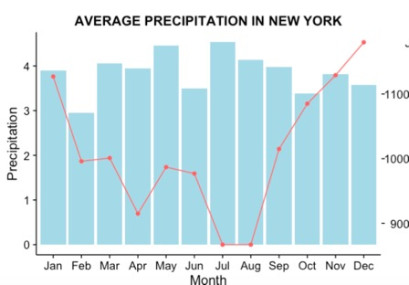
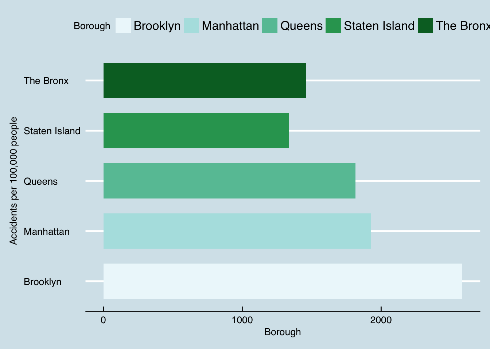

How precipitation is related with accident?
Conclusion from the graph
First, we want to study whether or not should Precipitation be regarded as one of the major contributions to accidents, hence, we collected data about the reasons for traffic accidents of 2016 in New York from nyopendata, and try to find how many of them may be related to Precipitation.
We believe that Precipitation could lead to problems about slippery, problems of unclear view and problems of over-speedy,for example, slippery roads may lead to steering Failure, unclear views may lead to driver inattention problems, and from such assunptions, we made the pie graph above, according to which, we believe Precipitation may be a main contributor to the traffic accidents.
Draw from graph
Below are two interactive graphs about the monthly average amount of Precipitation and the monthly average number of deaths and the injured caused by traffic accidents of Year 2016.
It’s obvious that months Jan, Mar, May, Jul, Aug have the largest amount of Precipitation.
And in months Jan,Oct,Nov and Dec, the number of deaths and injured are more.
Draw from graph
From this interactive graph, it’s obvious that May, Jul and Mar have the largest amount of Precipitation compared to other months.
Draw from graph
From this graph, we can find that more people get injured or die in months Dec, Nov and Jan, Hence, in order to better understand the relationship between Precipitation and accidents, we try to combine them together to reveal the result in the term of time.
 

Conclusion from the graph
The first graph above shows the relationship between average amount of Precipitation and the monthly number of injuring and death. the y axis in the right show the amount of Precipitation and the right axis shows the number of people injured or died due to traffic accidents. according to this graph, we find that in the months where precipitation is larger, the number of people hurt in traffic accidents seem to be smaller, the reason for which may be that prople will choose to stay at home rather than go out when it is rainy or snowy
The second graph above show the relationship between monthly average number of days with Precipitation and the monthly injured and died, the left y axis shows the number of days and the right axis shows the number of people injured or died in traffic accidents.From the graph, it seems that in the first 8 months in a year, there exits a negative relationship between the two variables, however, in the last 4 months, the relationship seems to be positiove.
The third graph shows the relationship between average amount of Precipitation and the monthly average number of days with Precipitation.
From such graphs, it’s hard to confirm our initial assumption that the amount of precipitation share a positive relationship with traffic accidents.

Draw from graph
In the terms of time, it’s hard to find the relationship we assumed, we then tried to study the relationship in the term of the location.
Further consideration
From the two graphs above,it’s true that there are more accidents in Brooklyn and Manhattan, and now, let’s try to find the Precipitation in such regions.